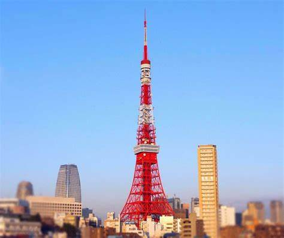

Illuminations nocturnes
Le soir, la Tour de Tokyo se transforme en une œuvre d'art lumineuse. Ses illuminations sont particulièrement spectaculaires et peuvent changer en fonction des saisons ou d’événements spéciaux. C'est un spectacle à couper le souffle, surtout si tu te trouves en bas ou dans les environs.